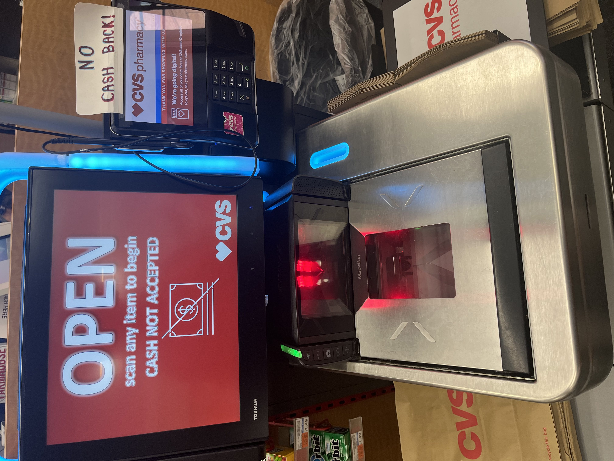
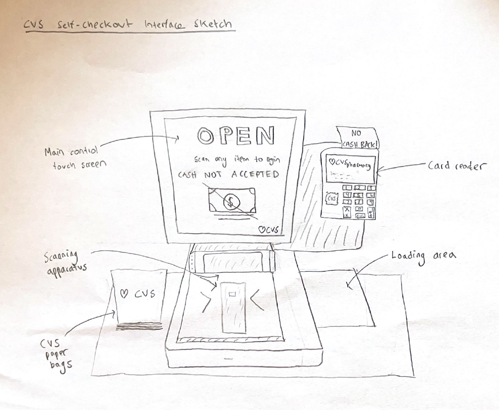
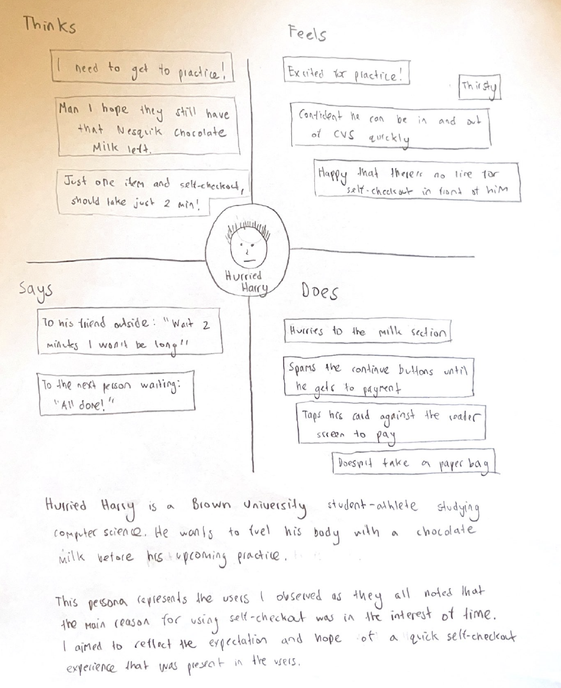
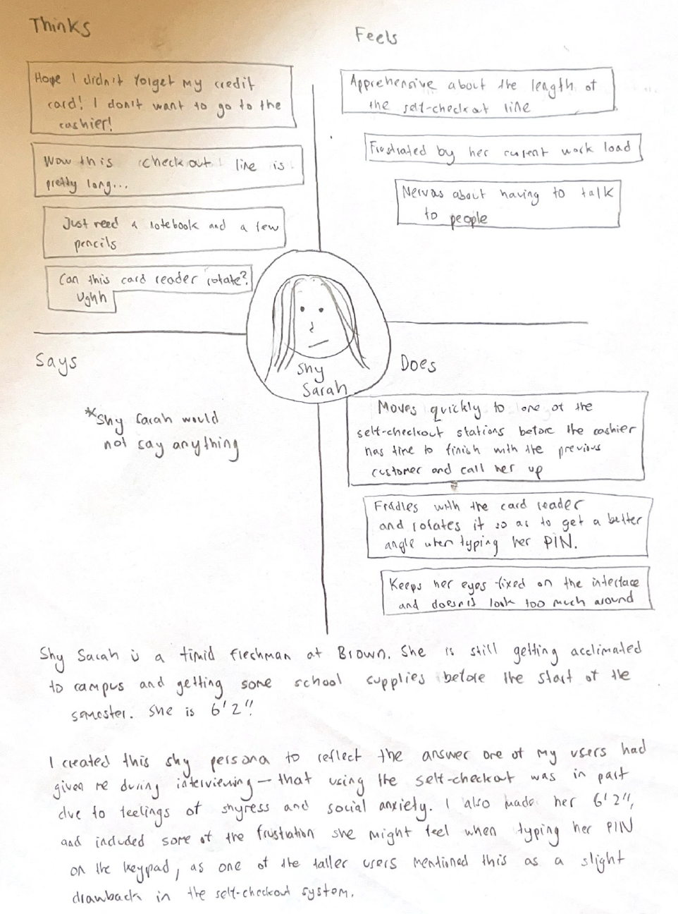
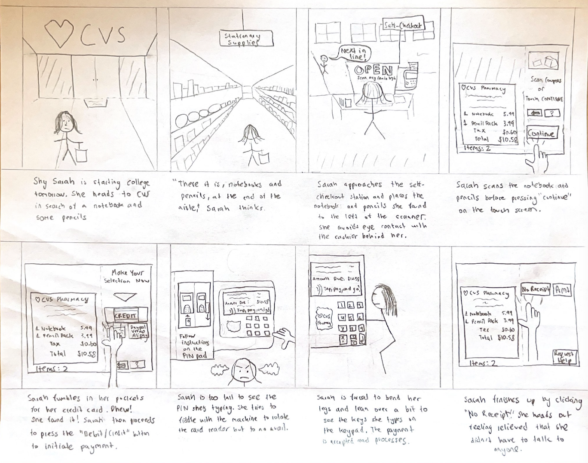

Personas and Storyboarding: The CVS Self-Checkout System
Location: inside CVS (291 Thayer St.)
Abstract: For this project, I am stepping into a user’s shoes. I have observed real users
interacting with an interface, interviewed these individuals about their experiences,
created personas based on these users, and illustrated a storyboard for one of my
personas.
My chosen interface is the CVS self-checkout system, located at the CVS on
Thayer St. It allows customers to check out and pay for items themselves without
having to consult a cashier. The interface consists of a main control touch screen,
where scanned items appear and decisions about payment are taken, a scanning apparatus,
which scans the barcode on each item, and a card reader, which handles payment.


Key Observations from Observing Users
-
Two of the three users were moving through each screen of the CVS self-checkout
interface quite quickly; they were very eager to scan their items quickly and select
the “continue” and “credit/debit” buttons before presenting their payment method
-
Perhaps as a result of moving too quickly, one of these users forgot to press the
“credit/debit” button before inserting his card into the reader; he quickly realized
however, and pressed the button (with his card in the reader) before an error could
appear (as it has for me in the past)
-
One user moved more slowly, taking more time to reach the text on each screen before
pressing a button on the touch screen
-
None of the three users revealed much emotion—they all remained relatively stoic
while using the interface
-
Two of the users were unable to scan certain items on the first try—when this
happened it took 2-3 tries to get the system to scan the item properly
-
Two of the taller users (above 5 foot 8 inches) had to bend down a little bit in
order to see the numbers on the card reader when typing in their pin
-
All three users selected the “No Receipt” option at the end
Interview Questions and Answers
-
Why do you choose the self-checkout method as opposed to going to the cashier?
-
Do the individual components of the interface— the touch screen that shows the
scanned items, the scanning/loading area below, and the card reader and its
screen—work well together?
-
How would you describe the process of moving through the screens when checking out?
Does the flow and organization of the touch screen make sense?
-
What, if anything, would you change about either the interface design or the
way it works?
Summarized Responses
-
The reason for using the self-checkout method as opposed to the cashier was
generally in the interest of time and simplicity; each user noted that
unless they have cash on-hand, they usually use self-checkout
-
One user admitted that he is a little bit antisocial and awkward and thus he
prefers using the self-checkout to avoid any unnecessary human interaction
-
The users thought the individual components of the interface worked well together and
made sense, as each component serves a specific purpose
-
The flow and organization of the touch screen also makes sense, although some of the
buttons/functions like “Use My Own bag” and “Phone Number Lookup” come
along with a little confusion as they are rarely, if ever, used
-
The only proposed change was by one of the taller users, who touched on the annoying
nature of having to bend down to type in his pin; he proposed that the card reader
screen be placed horizontally, parallel to the floor, as opposed to vertically, in
order to better see the numbers on the keypad
Personas


Storyboard
